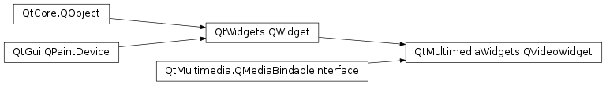

QVideoWidget¶
Inherited by: QCameraViewfinder
Synopsis¶
Functions¶
- def
aspectRatioMode() - def
brightness() - def
contrast() - def
hue() - def
saturation()
Slots¶
- def
setAspectRatioMode(mode) - def
setBrightness(brightness) - def
setContrast(contrast) - def
setFullScreen(fullScreen) - def
setHue(hue) - def
setSaturation(saturation)
Signals¶
- def
brightnessChanged(brightness) - def
contrastChanged(contrast) - def
fullScreenChanged(fullScreen) - def
hueChanged(hue) - def
saturationChanged(saturation)
Detailed Description¶
The
QVideoWidgetclass provides a widget which presents video produced by a media object.Attaching a
QVideoWidgetto aPySide2.QtMultimedia.QMediaObjectallows it to display the video or image output of that media object. AQVideoWidgetis attached to media object by passing a pointer to thePySide2.QtMultimedia.QMediaObjectin its constructor, and detached by destroying theQVideoWidget.player = new QMediaPlayer; playlist = new QMediaPlaylist(player); playlist->addMedia(QUrl("http://example.com/myclip1.mp4")); playlist->addMedia(QUrl("http://example.com/myclip2.mp4")); videoWidget = new QVideoWidget; player->setVideoOutput(videoWidget); videoWidget->show(); playlist->setCurrentIndex(1); player->play();Note : Only a single display output can be attached to a media object at one time.
-
class
PySide2.QtMultimediaWidgets.QVideoWidget([parent=nullptr])¶ Parameters: parent – PySide2.QtWidgets.QWidgetConstructs a new video widget.
The
parentis passed toPySide2.QtWidgets.QWidget.
-
PySide2.QtMultimediaWidgets.QVideoWidget.aspectRatioMode()¶ Return type: PySide2.QtCore.Qt.AspectRatioMode
-
PySide2.QtMultimediaWidgets.QVideoWidget.brightness()¶ Return type: PySide2.QtCore.int
-
PySide2.QtMultimediaWidgets.QVideoWidget.brightnessChanged(brightness)¶ Parameters: brightness – PySide2.QtCore.int
-
PySide2.QtMultimediaWidgets.QVideoWidget.contrast()¶ Return type: PySide2.QtCore.int
-
PySide2.QtMultimediaWidgets.QVideoWidget.contrastChanged(contrast)¶ Parameters: contrast – PySide2.QtCore.int
-
PySide2.QtMultimediaWidgets.QVideoWidget.fullScreenChanged(fullScreen)¶ Parameters: fullScreen – PySide2.QtCore.bool
-
PySide2.QtMultimediaWidgets.QVideoWidget.hue()¶ Return type: PySide2.QtCore.int
-
PySide2.QtMultimediaWidgets.QVideoWidget.hueChanged(hue)¶ Parameters: hue – PySide2.QtCore.int
-
PySide2.QtMultimediaWidgets.QVideoWidget.saturation()¶ Return type: PySide2.QtCore.int
-
PySide2.QtMultimediaWidgets.QVideoWidget.saturationChanged(saturation)¶ Parameters: saturation – PySide2.QtCore.int
-
PySide2.QtMultimediaWidgets.QVideoWidget.setAspectRatioMode(mode)¶ Parameters: mode – PySide2.QtCore.Qt.AspectRatioMode
-
PySide2.QtMultimediaWidgets.QVideoWidget.setBrightness(brightness)¶ Parameters: brightness – PySide2.QtCore.int
-
PySide2.QtMultimediaWidgets.QVideoWidget.setContrast(contrast)¶ Parameters: contrast – PySide2.QtCore.int
-
PySide2.QtMultimediaWidgets.QVideoWidget.setFullScreen(fullScreen)¶ Parameters: fullScreen – PySide2.QtCore.boolSee also
PySide2.QtWidgets.QWidget.isFullScreen()
-
PySide2.QtMultimediaWidgets.QVideoWidget.setHue(hue)¶ Parameters: hue – PySide2.QtCore.int
-
PySide2.QtMultimediaWidgets.QVideoWidget.setSaturation(saturation)¶ Parameters: saturation – PySide2.QtCore.int
© 2018 The Qt Company Ltd. Documentation contributions included herein are the copyrights of their respective owners. The documentation provided herein is licensed under the terms of the GNU Free Documentation License version 1.3 as published by the Free Software Foundation. Qt and respective logos are trademarks of The Qt Company Ltd. in Finland and/or other countries worldwide. All other trademarks are property of their respective owners.